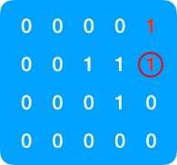

原文连接:https://www.cnblogs.com/xiekun/p/11802596.html
之前同事问了一道需要点脑洞的算法题，我觉得蛮有意思的，思路可能会给大家带来一些启发，特意在此记录一下
题目
现有一个元素仅为 0，1 的 n 阶矩阵，求连续相邻(水平或垂直，不能有环)元素值为 1 的序列和的最大值
假设有如下矩阵
则此矩阵连续相邻元素为 1 的序列和分别为 4， 3，（如图示），可知这个矩阵序列和的最大值为 4
解题思路
要算序列和的最大值，我们可以先找出所有可能的序列和，然后取其中的最大值,那怎么找这些序列呢？
首先我们发现，每个序列的起点和终点必然是 1，我们可以遍历矩阵的每一个元素，如果元素值为 1，则将其作为序列的起点开始查找所有以这个元素为起点的序列，我们知道序列是可以向垂直和水平方向延伸的，所以我们可以以这个元素为起点，查找它的上下左右值为 1 的元素，再以找到的这些元素为起点，继续在元素的上下左右查找值为1的元素（递归），如果找不到符合条件的值，则序列终止，在遍历过程中保存每条序列遍历的元素，即可知晓每条序列的元素和，从而求得序列和的最大值
文字说得有点绕，接下来我们就以查找以下矩阵的最大序列和为例来详细看一下如何查找最大序列和
从左到右，从上到下遍历所有值为 1 的元素，第一个符合条件的元素在右上角，所以以这个元素为起点来查找序列
以这个元素为起点，查找这个元素上下左右为值为 1 的元素，发现只有这个元素下面的元素符合条件
再以这个元素为起点查找这个元素前后左右值为 1 的元素，可以看到这个元素的上
，左元素值为 1，左边的元素显然符合条件，而上面的元素由于是当前正在遍历序列中遍历过的元素，所以不符合条件（假设上面的元素符合条件，会发生什么?接下来会寻找以上面元素为起始点的序列，又回到了第一步，陷入无限循环，所以元素的下一个值为 1 的元素不能是当前正在遍历的序列中的元素!，这一点是解题的关键，务必要注意!）
由此可知此时符合条件的元素如下红圈所示
再寻找此元素上下左右都为 1 的元素，可以看到这个元素的左右下的元素都为 1，根据上一步的分析可知，右元素是当前正在遍历序列中已遍历过的元素，所以不符合条件，那么只剩下左，下元素符合条件
- 再次寻找这两个元素上下左右皆为 1 的元素，可知符合条件的元素为步骤 3 中的红框元素，由于此元素是当前正在遍历序列中已遍历过的元素，所以不符合条件，序列的遍历到此终止，至此我们可以知道，从右上角元素为起点的序列和的最大值为 4 ,连接遍历过的元素，如图示

或
- 同理接下来再按照以上的步骤依次遍历剩余的值为 1 的元素，可知以这些元素为起点的序列和的最大值分别为 4, 3, 3, 4（如下图）
(红圈的元素代表序列遍历的起始点) 综上可知，此矩阵连续相邻值为 1 的元素的序列和的最大值为 4
代码实现
好了知道了解题思路，现在我们来看下代码该如何实现
首先我们要用一个数据结构来表示矩阵，显然矩阵用数组表示很合适,这里我们用一维数组来表示矩阵,Java 代码如下
public class Matrix {
/**
* @param matrix 矩阵
* @param dimension 代表 dimension 阶矩阵
* @return 矩阵序列的最大值
*/
private static Integer getMaxSequetialSum(int[] matrix, int dimension) {
int count = matrix.length; // 矩阵的元素个数
int maxSequentialSum = 0; // 矩阵序列的最大值
// 逐个遍历元素
for (int index = 0; index < count; index++) {
int elementValue = matrix[index];
// 如果当前元素为1，则以此元素为起点，查找以此元素为起点的序列的和的最大值
if (elementValue == 1) {
// 记录以下标为 index 的元素为起点的序列遍历过的元素位置,以防元素被重复遍历
Set<Integer> traverseElementSet = new HashSet<>();
traverseElementSet.add(index);
// 以下标值为 index 的元素为起点的序列的最大值
int currentSequetialSum = getCurrentVerticeSequetialSum(matrix, traverseElementSet, index, dimension);
maxSequentialSum = Math.max(maxSequentialSum, currentSequetialSum);
}
}
return maxSequentialSum;
}
/**
* @param matrix 矩阵
* @param traverseElementSet 序列中已遍历过的元素的位置
* @param index 元素的位置，序列的起点
* @param dimension dimension 阶矩阵
* @return 以位置为 index 的元素为起点的序列的最大值
*/
private static Integer getCurrentVerticeSequetialSum(int[] matrix, Set<Integer> traverseElementSet, int index, int dimension) {
// 查找 矩阵中位置为 index 的元素上下左右元素对应的位置
int left = index - 1;
int right = index + 1;
int up = index - dimension;
int down = index + dimension;
// 以左元素为起点的序列的值
int leftIndexSum = 0;
// 以右元素为起点的序列的值
int rightIndexSum = 0;
// 以上元素为起点的序列的值
int upIndexSum = 0;
// 以下元素为起点的序列的值
int downIndexSum = 0;
/**
* 以下四个if else 旨在检查每一个元素位置的有效性，值必须为 1
* 需要注意的是元素不能是序列已遍历过的元素！
* 如果上下左右元素不合法，则序列终止，打点此遍历序列的元素和
*/
if (left >= 0 && matrix[left] == 1 && !traverseElementSet.contains(left)) {
Set<Integer> leftTraverseElementSet = new HashSet<>(traverseElementSet);
leftTraverseElementSet.add(left);
leftIndexSum = getCurrentVerticeSequetialSum(matrix, leftTraverseElementSet, left, dimension);
} else {
leftIndexSum = traverseElementSet.size();
}
// 右元素必须与位置为index的元素在同一行上
if (right / dimension == index / dimension && matrix[right] == 1 && !traverseElementSet.contains(right)) {
traverseElementSet.add(right);
Set<Integer> rightTraverseElementSet = new HashSet<>(traverseElementSet);
rightTraverseElementSet.add(right);
rightIndexSum = getCurrentVerticeSequetialSum(matrix, rightTraverseElementSet, right, dimension);
} else {
rightIndexSum = traverseElementSet.size();
}
if (up >= 0 && matrix[up] == 1 && !traverseElementSet.contains(up)) {
Set<Integer> upTraverseElementSet = new HashSet<>(traverseElementSet);
upTraverseElementSet.add(up);
upIndexSum = getCurrentVerticeSequetialSum(matrix, upTraverseElementSet, up, dimension);
} else {
upIndexSum = traverseElementSet.size();
}
if (down < matrix.length && matrix[down] == 1 && !traverseElementSet.contains(down)) {
Set<Integer> downTraverseElementSet = new HashSet<>(traverseElementSet);
downTraverseElementSet.add(down);
downIndexSum = getCurrentVerticeSequetialSum(matrix, downTraverseElementSet, down, dimension);
} else {
downIndexSum = traverseElementSet.size();
}
// 查找以位置为 index 的元素为起点各向上下左右延伸的序列的最大值
return Collections.max(Arrays.asList(leftIndexSum, rightIndexSum, upIndexSum, downIndexSum));
}
public static void main(String[] args) {
// 初始化矩阵,假设此矩阵为 5 x 5 矩阵
int[] matrix1 = {
0,0,0,0,1,
0,0,1,1,1,
0,0,0,1,0,
0,0,0,0,0,
};
int max = Matrix.getMaxSequetialSum(matrix1, 5);
System.out.println(max); // 打印4
int[] matrix2 = {
0,0,0,0,1,
0,0,1,1,1,
0,0,1,1,0,
0,0,0,0,0,
};
max = Matrix.getMaxSequetialSum(matrix2, 5);
System.out.println(max); // 打印6
}
}时间复杂度与空间复杂度分析
任何算法，如果不谈时间复杂度与空间复杂度都是耍流氓，接下来我们看下以上解法的时间复杂度和空间复杂度
1.首先来看空间复杂，由于在在遍历过程中我们用了记录遍历序列元素位置的 traverseElementSet，所以空间复杂度显然是 O(n)
2.这道题用了递归，时间复杂度确实挺复杂的，也比较考验程序员的水平，直观上看不出来，那我们看下怎么推导，我们用 f(n) 来表示以位置为 n 的元素为起点的序列和的计算次数，从以上的推导可知，只要计算出以此元素的上下左右元素为起点的序列和的最大值，也自然知道了 f(n)。即计算以位置 n 为起点的序列和次数换算成计算以此元素的上下左右元素为起点的序列和的次数
f(n) = f(左) + f(右) + f(上) + f(下)
仔细考虑一下可知以上下左右四个元素为起点的序列和的计算次数可以认为是一样的
从而有
f(n) = 4f(左)
假设矩阵元素个数为N,则
f(n) = 4N
由于有 N 个元素，所以可知总的时间复杂度为 O(4N2),即 O(n2)
总结
这道题乍一看确实没什么头绪，无法像反转二叉树那样比较容易地看出使用递归的思路去解决，所以我们需要耐心地去分析，学会把问题分解，分解思路如下
求序列的最大和转化为求所有序列的和 ----> 转化成如何找寻所有的序列 ----> 观察到序列的起点的元素必须是 1 ----> 想到如何找寻以此元素为起点的所有序列 ----> 只要找到以这个元素上下左右值为 1 的元素为起点的所有序列和 ----> 再以上下左右元素值为 1 的元素为起点递归找寻以它们各自的上下左右值为 1 的元素为起点的所有序列和 ----> 找到所有的序列和后自然就找到了最大序列和
个人微信号「geekoftaste」，欢迎加微信一起交流，共同进步